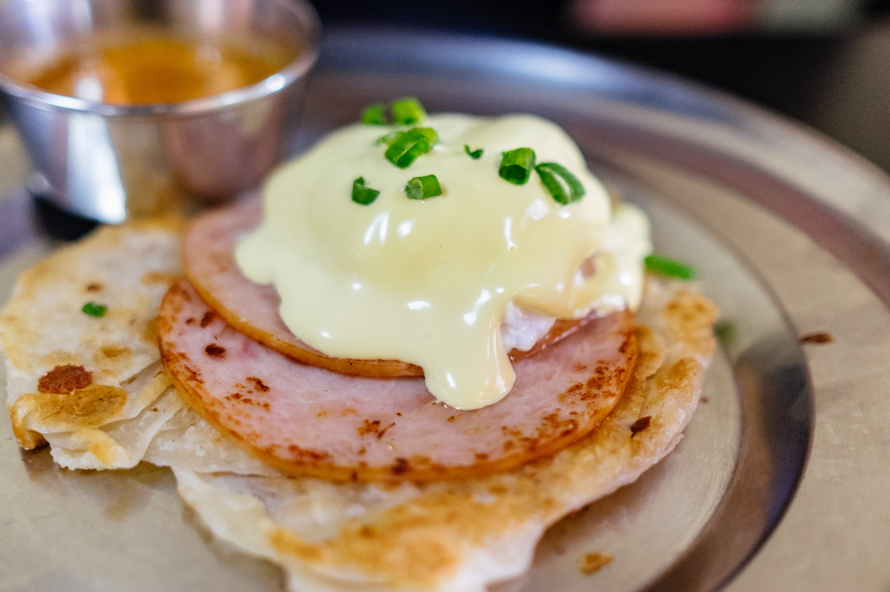

Prata

Description
One of my favourite breakfast/lunch/dinner flat breads ever.
Ingredients
- 225g ap flour
- 1tsp salt
- 25g sugar
- 50g boiling water
- 50g warm milk (temp approx 50C-60C)
- 55g warm water (temp approx 50C-60C)
- Oil for coating the dough balls prior to sahping (or ghee)
- Melted ghee as needed for frying and shaping the dough
Steps
- Mix the flour and boiling water together until combined. Add the sugar, salt, milk and water water and knead with a dough hook on medium for 9 minutes until dough is shiny and elastic.
- hape into a ball, oil the surface and place into a bowl. Cover with cling wrap or damp towel and let sit for 1hr minimum. Divide into 4 equal balls and shape into balls.
- Oil the surface and cover to let rest for another hour at minimum or overnight in the fridge.
- When ready to shape, (ensure your dough ball is at room temp if you have stored it in the fridge overnight) flip the dough as per the video where you essentially slam it against the table to stretch the dough.
- When the dough is really thin and the edges are thin too, spread some ghee on the surface of the dough. Fold in thirds along the width so that you have a long strip, and then picking up one end, coil it into a round tucking the tip under the dough.
- Let rest for 30mins – 1hr. (I wouldn’t recommend resting it for longer) Preheat a skillet on medium heat.
- When ready to fry, flatten the dough with the palm of your hands into a relatively thin disk. Add some ghee to your preheated pan and fry the dough on medium until golden on both sides.
- Fluff the dough up by slamming your hands together in a cupping motion.
- Serve warm with your favourite curry!